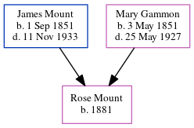

Rose E Mount 1881 -
[ Home ] | [ Calendar ] | [ Surnames Index ] | [ Census Index ] | [ Family History ]A laundress and the child of James Mount (a stoker at gasworks) and Mary Gammon (a laundress), Rose Mount, the second cousin three-times-removed on the mother's side of Nigel Horne, was born in Herne Bay, Kent, England in 18811.
During her life, she was living at King Street in Herne Bay on Apr 5, 18912 and on Mar 31, 19011.
Parents
- James was born on Sep 1, 1851
- Mary Julia was born on May 3, 1851
Citations
- 1901 England, Wales & Scotland Census - Findmypast (was age 20 and the daughter of the head of the household)
- 1891 England, Wales & Scotland Census - Findmypast (was age 9 and the daughter of the head of the household)
Media
1891 England, Wales & Scotland Census - GBC/1891/0005766701
Family Tree
Generated by ged2site. Last updated on Jun 11, 2024